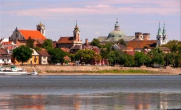
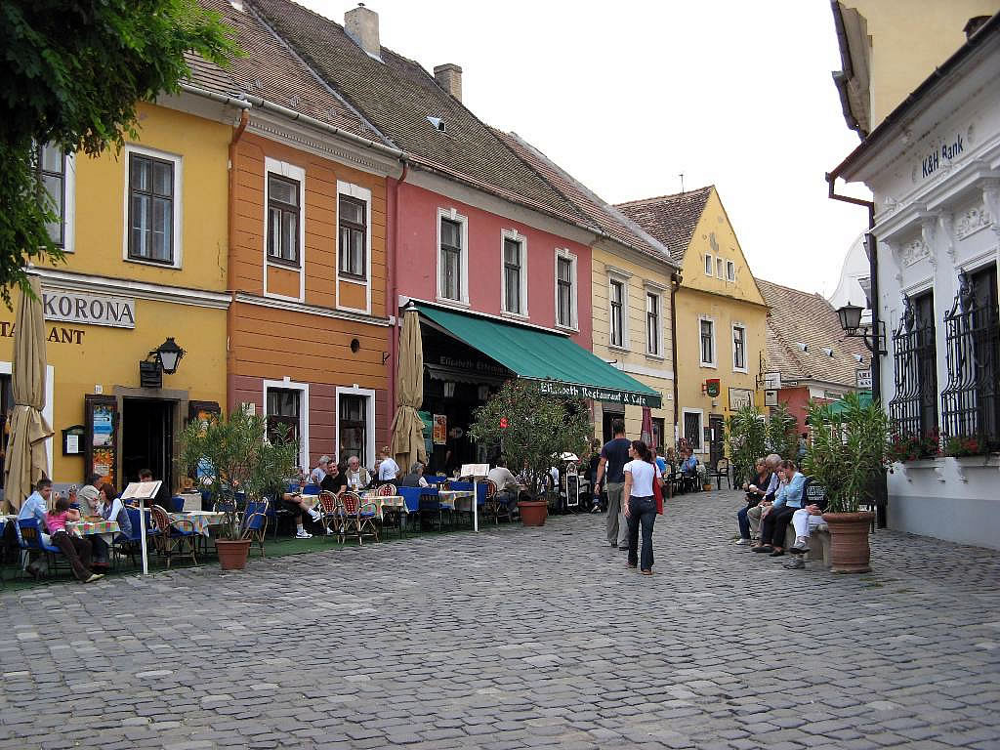
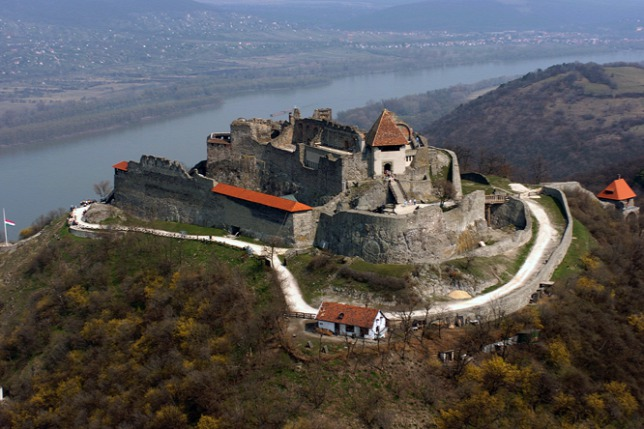
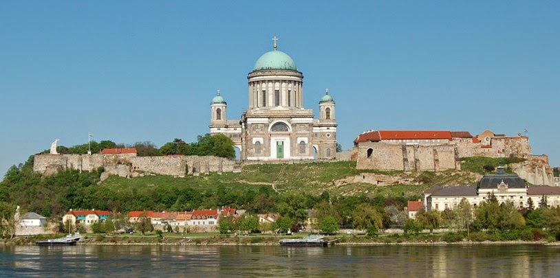
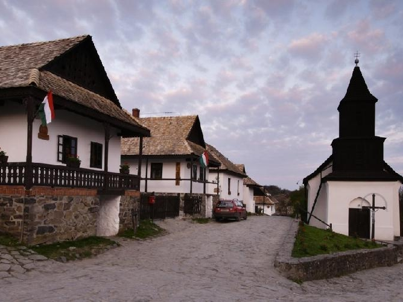
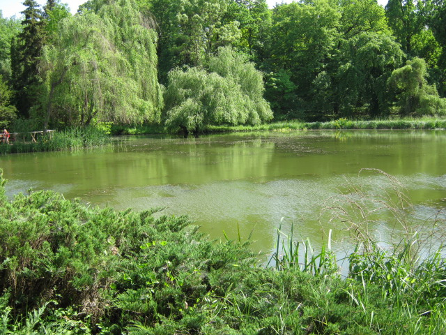
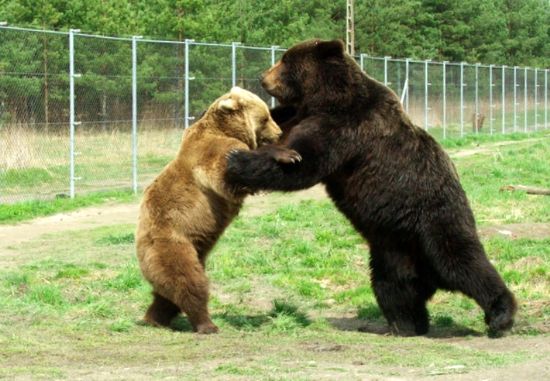
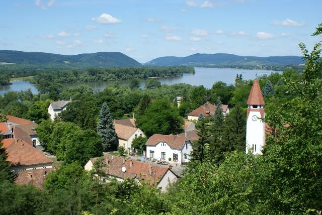
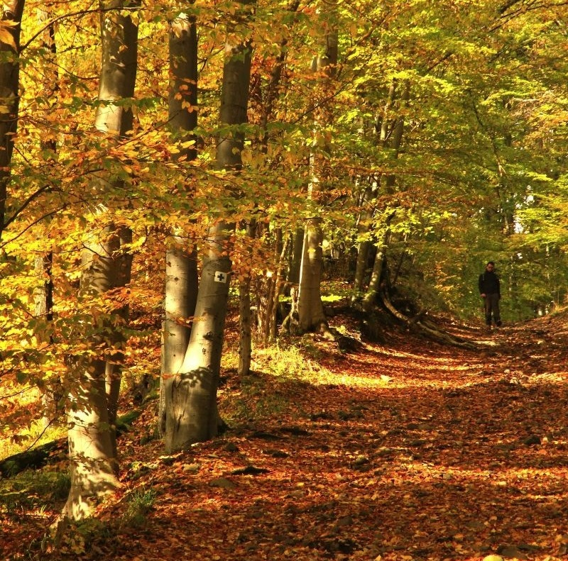

|  |
VácVác a Dunakanyarnak egyik kevéssé ismert, rejtett kincse. A város ezeréves múltra tekint vissza. Távol a turisták forgatagától felfedezhetjük Vác számos templomát, barokk főterét, lenyűgöző dunaparti sétányát, az ország egyetlen diadalívét… |
|---|---|
|  |
SzentendreA túlparton elhelyezkedő művészváros ideális célpont mindazoknak, akik szeretik a múzeumokat, a hangulatos kis kávéházakat, a kézműves portékákat kínáló árusokat. |
|  |
VisegrádVisegrád 20 kilométerre északra fekszik a Duna túlsó partján. Mátyás király korabeli fellegvára lenyűgöző látványt kínál, akár alulról tekintünk fölfelé, akár a fellegvárból csodáljuk a dunai panorámát. Kihagyhatatlan látványosság a nemrégiben felújított reneszánsz királyi palota is. |
|  |
EsztergomEsztergom a Dunakanyar északi kapuja. Érseki bazilikája fenséges látványként emelkedik a város fölé – tanúskodva a város múltjáról és egyházi központként betöltött szerepéről. |
|  |
HollókőMagyarország legszebb faluja Váctól 80 kilométerre található. Hollókő a Világörökség része. |
|  |
A vácrátóti botanikus kertVáctól 13 kilométerre található az ország egyik legszebb, legfajgazdagabb botanikus kertje.omát, barokk főterét, lenyűgöző dunaparti sétányát, az ország egyetlen diadalívét… |
|  |
A veresegyházi medvefarmKülönleges élmény a gyerekeknek – az ország egyetlen medveparkja, 20 km-re Váctól |
|  |
ZebegényA festők faluja – és valóban festői kis falu a Duna bal partján. Itt élt és alkotott Szőnyi István Kossuth-díjas festőművész. Háza ma múzeumként látogatható. A település kiemelkedő látnivalója a Kós Károly tervezte szecessziós Havas Boldogasszony plébániatemplom. |
|  |
BörzsönySzámos gyalogtúra-lehetőséget kínál a közeli Naszály, illetve a Börzsöny-hegység. |